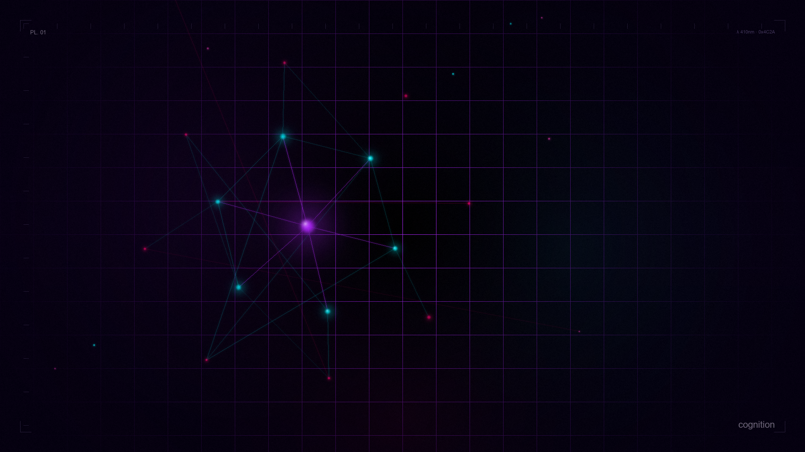
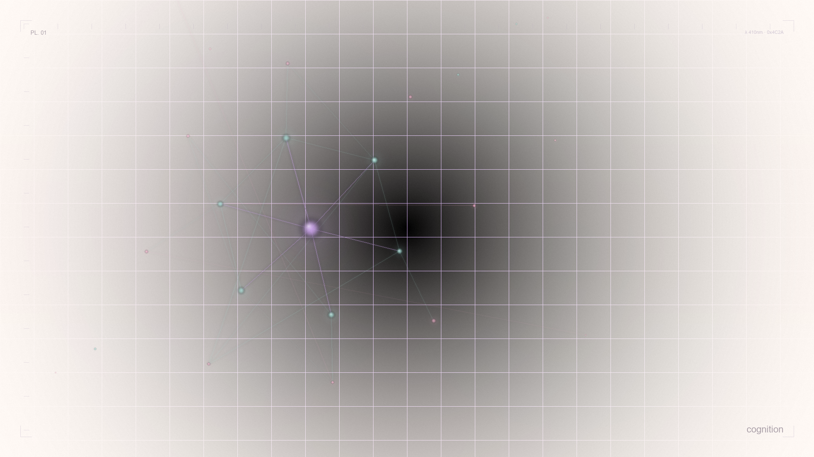
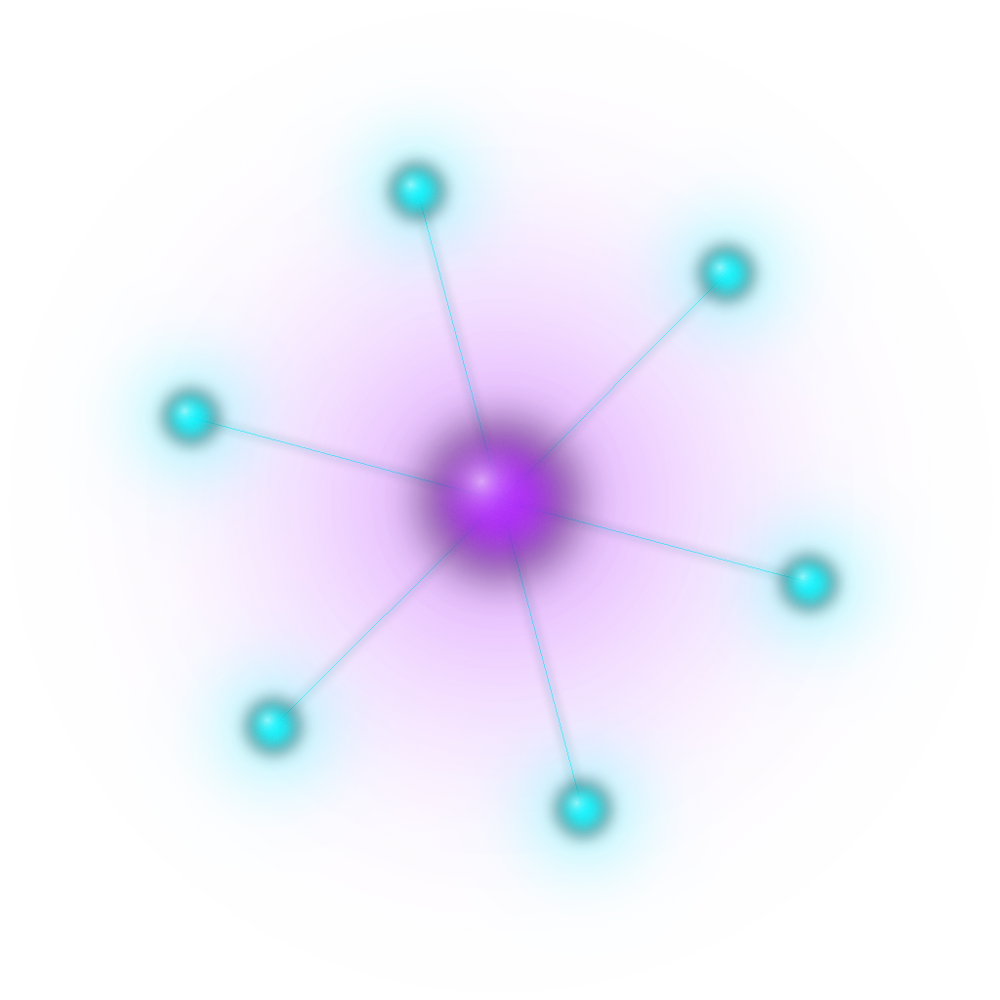

"The canvas is a darkroom; the composition, a long exposure of the mind at work."

"Where the palette shifts from dark to light — from night to dawn — the same spectrum inverts its values but preserves its relationships."

A luminous violet nucleus orbited by six cyan satellites, tethered by hairline filaments. One geometry, two phases — transparent background adapts to any theme.
"A single dominant focal point anchors the composition; around it, secondary marks fall into orbital rings at decreasing intervals."